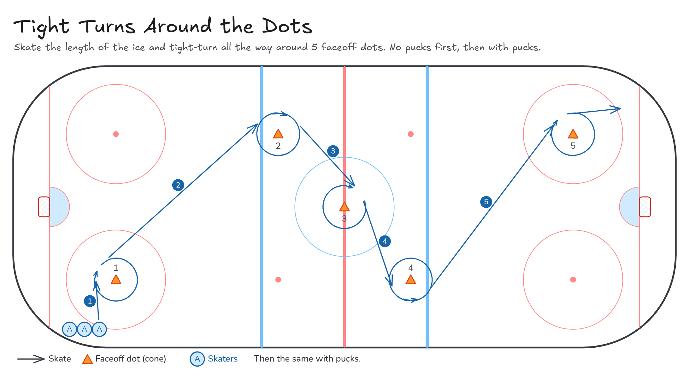

Tight Turns Around the Dots
Skate the length of the ice and tight-turn all the way around 5 faceoff dots. No pucks first, then with pucks.
- Full ice
- Skating
Watch
Diagram

Coaching points
- Knees bent, inside knee deep, lean into the turn.
- Inside edge on the outside foot, outside edge on the inside foot.
- Head and stick lead you around the dot.
- Push out of the turn with crossovers.
- With pucks: keep the puck on the inside of the turn, close to your feet.
How it runs
- Put a cone on 5 faceoff dots. One line starts in the corner.
- Skate to dot 1 and tight-turn all the way around it.
- Skate to dot 2 and tight-turn.
- Tight-turn at centre ice (dot 3), then dot 4.
- Tight-turn at dot 5 and sprint to the far goal line. Come back down the boards.
- The next skater goes when the one ahead reaches dot 2. Then do it again with pucks.
Downloads

Open the Excalidraw file in Excalidraw to change the diagram.